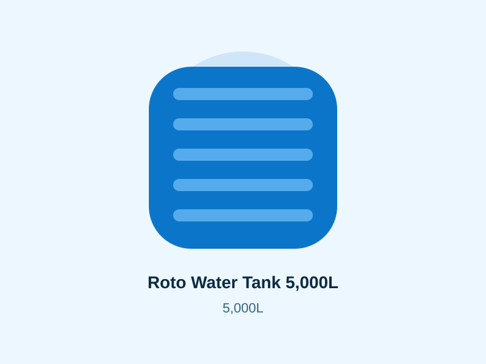
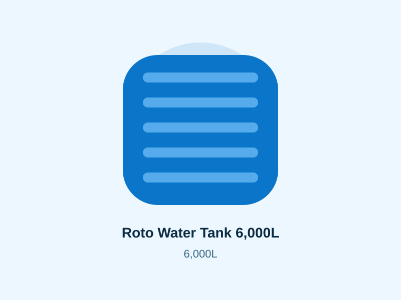
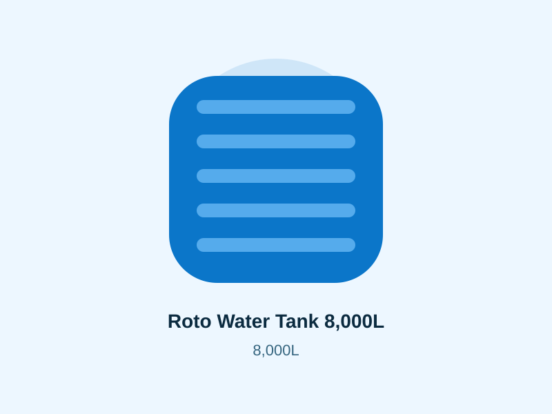
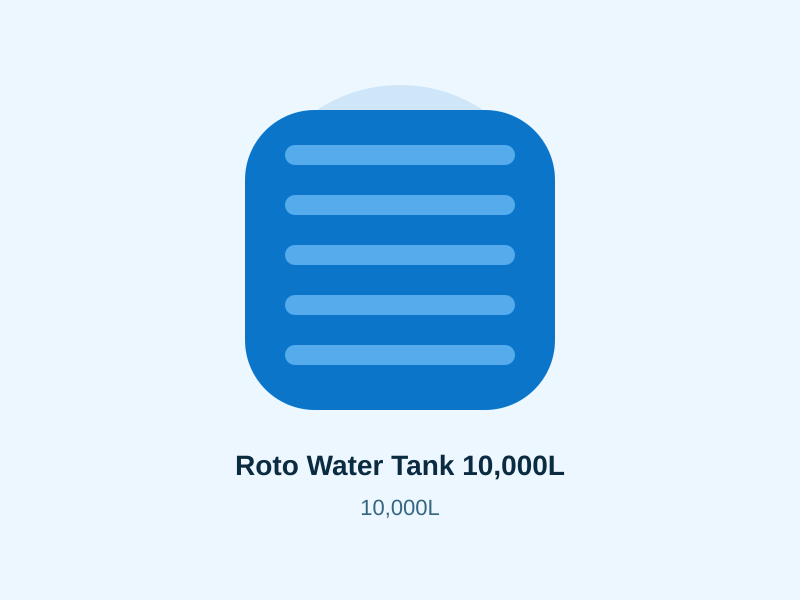
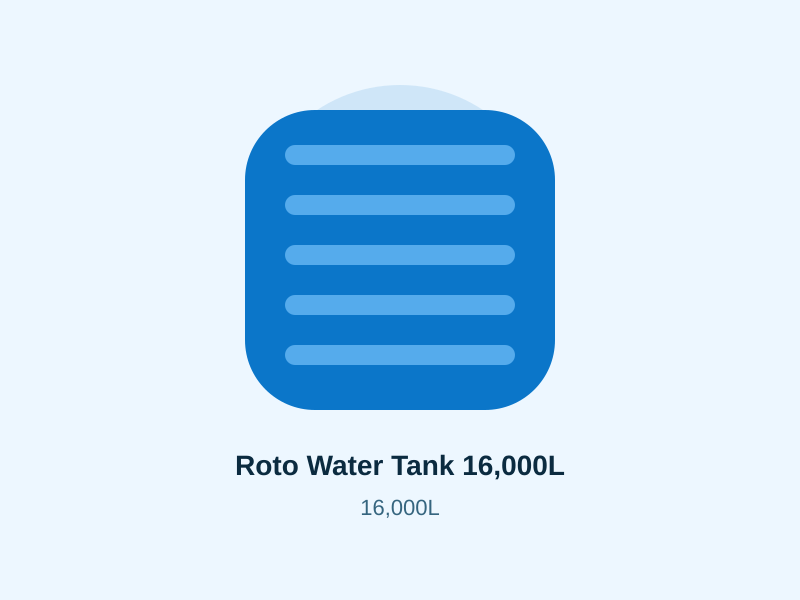
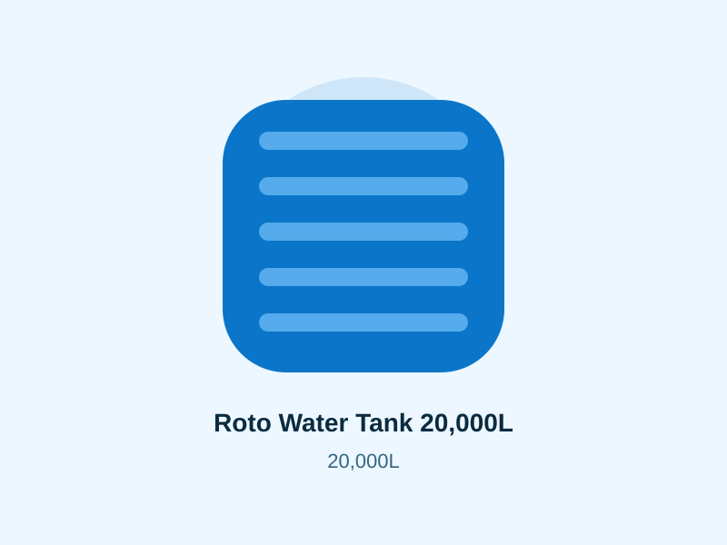
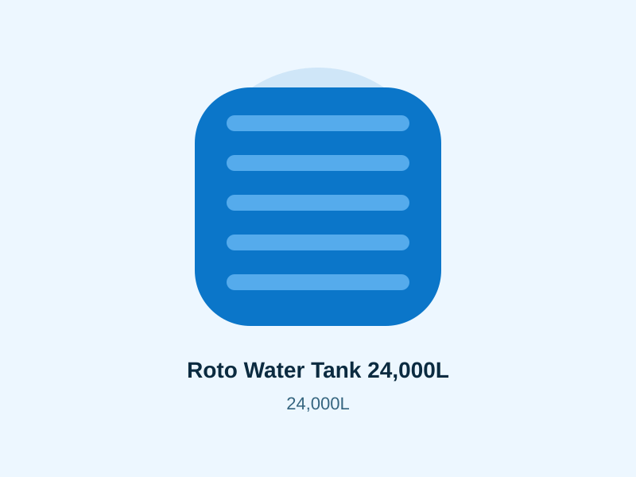

Roto Tanks
Roto Water Tank 1,000L
1,000 litres
KSh 6,500
Domestic water storage, rainwater harvesting and backup supply.
Compare products, indicative prices and practical selection guidance before requesting a current quotation.
Domestic water storage, rainwater harvesting and backup supply.

Compact household water storage for homes and small businesses.

Popular medium-size tank for homes, rentals and small farms.

Balanced storage capacity for households and commercial premises.

High-demand tank for homes, apartments, farms and rainwater harvesting.

Large household and institutional water storage solution.

Large-capacity tank for schools, farms and commercial properties.

Large water storage for apartments, schools, farms and businesses.

High-volume storage for institutions, farms and commercial sites.

High-capacity water storage for large compounds and institutions.

Maximum listed capacity for large commercial and institutional storage.
Start with the amount of water you want available during a supply interruption. A household with regular municipal water and short outages has different needs from a farm, school or apartment block relying on borehole pumping or harvested rainwater. Estimate daily use, decide how many reserve days matter, then select the next practical capacity above the estimate.
The supplied catalogue ranges from 1,000L at KSh 6,500 to 24,000L at KSh 135,000. Mid-range sizes such as 3,000L, 5,000L and 10,000L suit many residential and mixed-use enquiries. Larger 16,000L, 20,000L and 24,000L tanks target sites where a larger buffer matters.
Homes often value compact footprints and backup supply. Apartments and institutions need to consider simultaneous demand, pump capacity, roof or ground placement and structural support. Schools and commercial properties should plan for peak-use periods rather than average use alone.
A filled tank is heavy. The support surface should be stable, level and suitable for the full load. Confirm the current manufacturer base and placement guidance. Also check gate width, turning space and offloading access before dispatching a large tank.
Before paying, confirm the exact tank capacity, current dimensions, price, stock, fittings included, delivery charge and offloading arrangement. Send the county and town in your WhatsApp enquiry so the quotation starts with the information needed to plan transport.
Check delivery to your town · Browse all Roto tank sizes and prices · Read tank buying FAQs